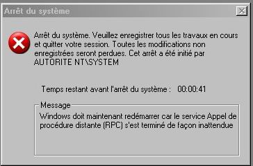

.::[
Top 10 des Virus | Worms SpyBot | Ms
Blast ( RPC ) | En cas de Virus ?]::.

 Top
10 des Méchants Virus : Top
10 des Méchants Virus :
 Virus
SpyBot Virus
SpyBot
 Introduction : Introduction :
Le virus SpyBot est un méchant virus que vous avez surement
attrapé à cause de kazaa !
Son nom scientifique est : worms_SpyBot.gen
Ne vous inquiétez pas, ce virus est très
simple à enlever !
Effet
du Virus :
Pour savoir si vous êtes infectés par ce virus, rien de plus
simple !
Test 1 : Cliquez sur
Démarrer / Exécuter -> Et rentrez "msconfig"
: Si une fenêtre s'affiche et se ferme aussitôt, c'est
que vous avez le Virus !
Test 2 : Cliquez sur
Démarrer / Exécuter -> Et
rentrez "regedit" :
Si une fenêtre
s'affiche
et se ferme aussitôt, c'est que vous avez le Virus !
Test 3 : Sous
XP, faite CTRl + ALT + SUPPR ->
Si le gestionnaire des tâches se lance puis se ferme tout seul,
c'est que vous
avez encore le Virus !
En conclusion, ce virus vous bloque l'accès à la base
de registre,
à Msconfig et au gestionnaire des tâches en autre !
Il fait cela gràce au fichier "wuaumqr.exe"
.
Désinfection
:
1°) Redémarrer
votre Pc en Mode Sans Echec
-> Appuyer sur F8 pendant le chargement
2°) Ouvrez
votre session, Puis ouvrez un dossier et faire Outils/Options des
dossiers/Affichage/ et cocher "Afficher les fichiers et dossiers
cachés"
3°) Allez
dans c:\Windows\System32\ et supprimez le fichier wuaumqr.exe (
il est caché)
4°) Allez
dans C:\Documents and Settings\All Users\Menu Démarrer\Programmes
et SI vous trouvez un fichier "dcom.exe",
virez-le !
5°) Faite
ensuite démarrer/Exécuter "REGEDIT" et
recherchez toutes les clés ou dossiers se raportant à WUAUMQR.EXE (
CTRl+F est très pratique !)
6°) Tout ce que vous trouvez vous le virez (
clé voir
Dossier même !! )
Virus
Msblast
Introduction
:
Le virus MSBLAST est un virus qui a touché 66%
des utilisateurs de Windows Xp. Autant dire que c'est un gros
virus .
Voici à quoi il ressemble :

Effet
du Virus :
Bin... Arrête
votre PC dans la minute avec le beau message ( voir image
plus haut )
Ce message se lance une fois que vous êtes connectés
et lance l'arrêt de votre ordinateur dans la minute ! C'est très
chiant !
Désinfection
:
Quand le message apparait,
lancer cette commande sous dos pour annuler l'arrêt
du système
.
-"shutdown -a" dans
démarrer / exécuter
-ctrl+alt+suppr pour avoir le gestionnaire
des tâches,
s'il y a un processus msblast.exe, le stopper.
Ensuite, installez ce pacth fournis
par Microsoft :
WindowsXP-KB823980-x86-FRA.exe
Puis ce fichier qui éradique MSblast pour de bon ! :
FixBlast.exe
[::. Les
Astuces du Docteur Kirikiri en cas d'Infection .::] Vous pensez avoir été contaminé par
un virus, que vous n'avez aucun anti-virus efficace et vous
ne savez pas quoi faire ?
La première chose à faire et de regarder
dans le Gestionnaire des tâches dans l'onglet processus
si vous ne trouvez pas un fichier qui vous semble importunt.
Attention : Il faut vraiment être expérimenté et connaître son
Pc pour que cette technique soit efficace car si vous êtes un
noob ( = un débutant ) prétez attention à tous les fichiers et
vous en trouerez au moins une cinquantaine de douteux !
Si vous êtes un "pro", retenez
le nom des fichiers qui vous semblent douteux.
Lancer
votre connexion internet et pour le début,
allez sur
google et lancer le nom du
fichier incriminé. Regardez les 6 premières pages
pour voir si aucune d'elles parlent d'un nouveau virus.
Si vous n'avez aucun résultat, faites votre recherche dans
des sites spécialisés comme :
 Securiser .::.
Très bon site de news sur les virus Securiser .::.
Très bon site de news sur les virus
Ou
son Anti-Virus en ligne ( Tout le temps à jour ! ) ici
Panda .::.
Anti-Virus Online par panda Software
TrendMicro .::.
un éditeur Anti-Virus : Pc-Cillin
Symantec .::.
Un éditeur Anti-Virus : Norton
AVG
.::. Un éditeur Anti-Virus : AVG
|